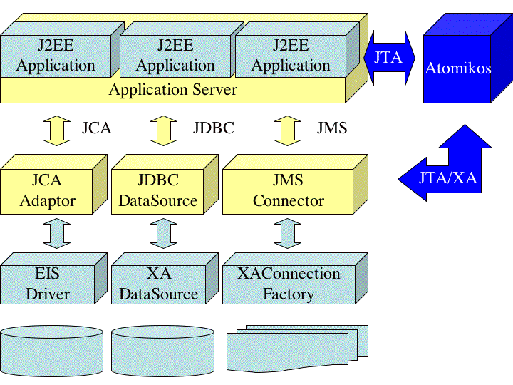
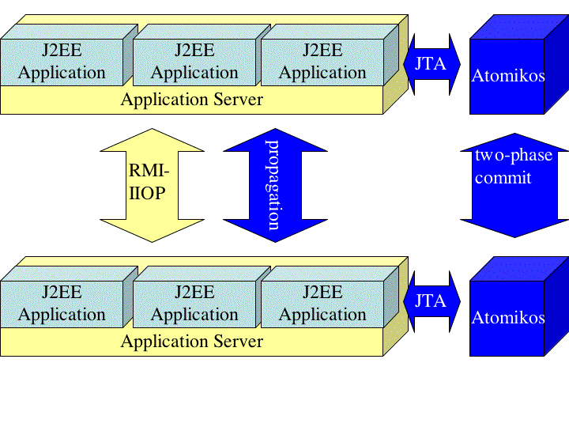

The word 'Transactions' is probably one of the most widely used terms in business and IT (as you can easily see by typing the word in Google). Moreover, every discipline tends to have its own interpretation of the same word. As a result, it is easy to misunderstand each other when talking about 'transactions' without further explanation of what is meant. This section will try to explain what Atomikos means by a transaction.
To Atomikos a transaction is something that should either execute entirely, or not at all. Half work is not acceptable. This is what Atomikos Transactions can ensure for you, and if you read through this section then you will also learn to appreciate the importance of that, in particular for the integrity and quality of your mission-critical business information. Maybe you will even ask yourself how this is done in your business software today, and that is a very good question: many applications are essentially running without solid guarantees in this respect. Who knows, maybe Atomikos Transactions is something for your business too...
The biggest value of information systems is of course that they can automate the business. For instance, in the case of order processing (familiar to almost any business), the information system could do the following things for you (with the help of one or more components):
This example only shows one database to keep it simple. Nevertheless, many of the points we are going to make can easily be generalized to the case of multiple databases. As a matter of fact, some of the problems we will mention are even worse in a multiple database scenario.
Looking at the example, a first and interesting problem arises: what happens when steps 3 and 5 need to access the same data in the database? Can this be done, and how? Technical readers who are familiar with databases will probably know that different accesses to the same data can be blocked by locks in the database. Most modern database systems work that way, and if two components want to access the same data then the database system will have to be told if this is allowed. This is a first problem that can arise: because the components were developed independently and possibly by different vendors, they can't be expected to take care of this. Something else will be needed.
The example also hints at another interesting question: what happens if there is a failure in step 5? For instance, what if the database crashes? Or what if the customer's credit card is rejected somehow? In those cases, it is unlikely that any healthy business would like the shipment to proceed. Consequently it is desirable to cancel the shipment as well. In other words, most businesses would like an all-or-nothing approach for each order. Because the components are independent, it is unrealistic to expect them to handle these cases (they would have to know what other, independent components have failed). Although one could argue that this can be done, it would make the overall order process much more complex (and therefore equally more expensive and unreliable).
The third problem has already been hinted at in the previous paragraph: if either the database or the application crashes (or maybe even both) then we would like the guarantee that the database is kept in a consistent state: a healthy business would not want to issue payments for lost shipments (billing the customer for nothing), or ship goods without invoicing the customer (lost revenue).
Some of the previous problems are even worse when different databases (and even other enterprise information systems) are accessed during the processing of the order. For instance, imagine that the Shipment Component is not running in the same company, but as a web service on a different webserver, in an entirely different company. If the order fails (for whatever reason) then any previous shipment requests have to be canceled as well, and someone or something has to do this. In addition, now there are two parties involved: what happens if the shipment request is accepted (by the shipping business) at first, but due to a delay in the payment processing, the shipping company decides to cancel the pending request?
The business impact of these problems is simple: without a solution, corporate data and information are at risk. Crashes are always possible, due to different factors such as power failures, bugs, out-of-memory errors, webserver overloads, and much, much more.
Different components or services sharing the same database(s) are already a fact today, and will increasingly become important as web services become more prevalent. Mutual service-level agreements between networked business processes will make the risk level unacceptably high for the problems we outlined. A solution is needed. Imagine that your shipping partner ships goods for orders that were cancelled, just because there was an unexpected failure in the order processing. For instance, if 1% of orders goes wrong for some reason, and your business processes 10.000 orders per day, then this could mean that 100 shipments are placed when they shouldn't!
One way to tackle these problems is the naive solution of handling all possible failures programmatically. Although possible in theory, in practice it has some severe drawbacks:
Another way to approach these problems is by letting them happen. When they happen human administrators are called in to clean up the corrupted business data, and restore the situation. This approach is even worse than the previous one:
The smart solution is by using a technology like Atomikos Transactions. It provides completely automated, mathematically sound, standards-based and well-tested tools for making the order processing reliable. In particular, it automates the cancellation of problematic transactions, even in the presence of crashes and across networked businesses.
As usual, there is no real magic but rather sophisticated technology. Information systems like the order processing example can use Atomikos Transactions to associate a so-called transaction with each incoming order. This transaction represents all the work that will be done during the processing of the order. With the co-operation of the database(s) and any other systems involved, this can make sure that the order is cancelled entirely whenever there is a problem.
Consider again the example of the order processing system. With a technology like Transactions, for each new order the system can ask the so-called Transaction Manager (supplied by Atomikos) to create a new transaction and associate it with the order:

When an order is completed and there were no errors, the order processing component (the one that started the transaction) can ask the transaction manager to commit. In transaction manager terminology, this is the word for saving the results in all parts of the system. The transaction manager will instruct all databases (and other systems) to save the work involved in the transaction. It can do this because it knows all parts of the system that participated in the transaction (as explained in the previous section). In distributed systems, commit has to be done with a variant called two-phase commit in order to deal with the intricacies of network failures and unilateral cancellations in individual parts of the system. The details on two-phase commit are widely documented in literature and are outside the scope of this paper.

When there is a failure, the transaction manager can be asked to rollback the transaction. This is jargon for cancelling all the work in all parts of the system.
This section gave you an idea of the problems involved, and how Atomikos Transactions can solve them for you. The rest of this paper shows how Transactions can be used for desktop (J2SE) and enterprise (J2EE) applications on the Java platform. A web services edition (SOAP) is in development at the time of writing. The rest of this paper is organized as follows:
For regular Java applications, Atomikos provides the transaction manager (called Java Transaction API - JTA - in the Java world) and a set of flexible connectors for databases and messaging systems. If your application creates a transaction then all subsequent accesses through the supplied connectors will automatically become subject to the outcome of the transaction. The integration of Transactions in your application is very straightfoward (in the common case, only one line Atomikos-specific code is necessary).
Database vendors supply their JDBC (Java Database Connect) drivers with their products. These drivers allow Java applications to send SQL to the database, and get the results back. On top of these drivers, Atomikos provides transactional drivers that your application should use. Otherwise, the database accesses will not be subject to the transaction manager's control. It should be noted that the database itself can reside on a totally different machine, as long as the driver can reach it by a network connection.
Messaging systems typically provide a JMS (Java Message Service) driver for their product. These drivers allow Java applications to post and retrieve messages from systems like MQSeries™. On top of these drivers, Atomikos provides transactional drivers that your application should use. Otherwise, the message receipt/send process will not be subject to the transaction manager's control. The messaging server itself can be on a totally different machine.
You can also integrate Transactions at a lower level (involving more work for your application) and avoid using Atomikos connectors. See the Atomikos documentation on how to do that.

Transactions also allows the scope of control to extend over networked Java applications. Java's RMI (Remote Method Invocation) is supported in all its variants. In this case, each participant Java application has its own transaction manager. When a transaction completes, the commit is coordinated between the different transaction managers. Each transaction manager takes care of the database accesses on behalf of its associated application.
The Transactions core product can also be extended to support other communication protocols besides RMI-IIOP. Contact Atomikos for more information.

In the normal case, Atomikos Transactions is added to the server (by installing it as a library in the application server's extensions set). It then becomes available to each J2EE application that is installed on the application server, and these applications can immediately use Transactions. In addition, our connectors are fully standards-compliant, meaning that they can be installed on any J2EE application server (since connectors are standard facilities for an application server). All accesses that are done through Atomikos connectors fall under the control of Transactions.
By default, the same connectivity is offered as for J2SE applications:
If the supplied set of connectors is not sufficient, then it is also possible to use third-party connectors instead.
In that case, these connectors have to perform certain standard-based interactions with the transaction manager (also known as XA, according to the Open Group's XA Specification). See the Atomikos documentation on more information about that. Note that there is nothing specific to Atomikos in these interactions; they are defined by industry-wide standards.
Transactions can also be used for networked transactions in J2EE server clusters.
In this case, more integration effort is necessary: the application server's network infrastructure will have to be aware of Transactions, in order to propagate the transaction information to remote servers. Behind the scenes, completion is then handled between the transaction managers in the servers involved. Each transaction manager takes care of the connectors in its own application server.
Atomikos Transactions has already been integrated with several application servers (and these are now supported out-of-the-box). This subsection includes some examples, please check the Atomikos website for the most up-to-date list.
Integration with a full application server is still easy, but requires some (very limited) server-specific efforts to be done. Atomikos can do this for you in a minimum of time. If you are a server vendor and want to integrate Transactions in your product, please contact Atomikos at info@atomikos.com.
Atomikos Transactions provides easy integration with Spring, allowing you to program true enterprise applications without the need for EJB or even an EJB container. The equivalent of container-managed transactions (CMT) can easily be obtained with Spring's support for aspect-oriented programming (AOP).
Included in the Transactions release is also a message-driven bean facility for out-of-container messaging, with full transactional reliability.
Atomikos Transactions can offer strategic advantages to your business. Whether you are a software vendor, or a business whose information techology is mission-critical, there are many advantages in using Atomikos Transactions.
Independent software vendors can use our OEM or reseller formula to rebrand or resell Atomikos Transactions, in order to: